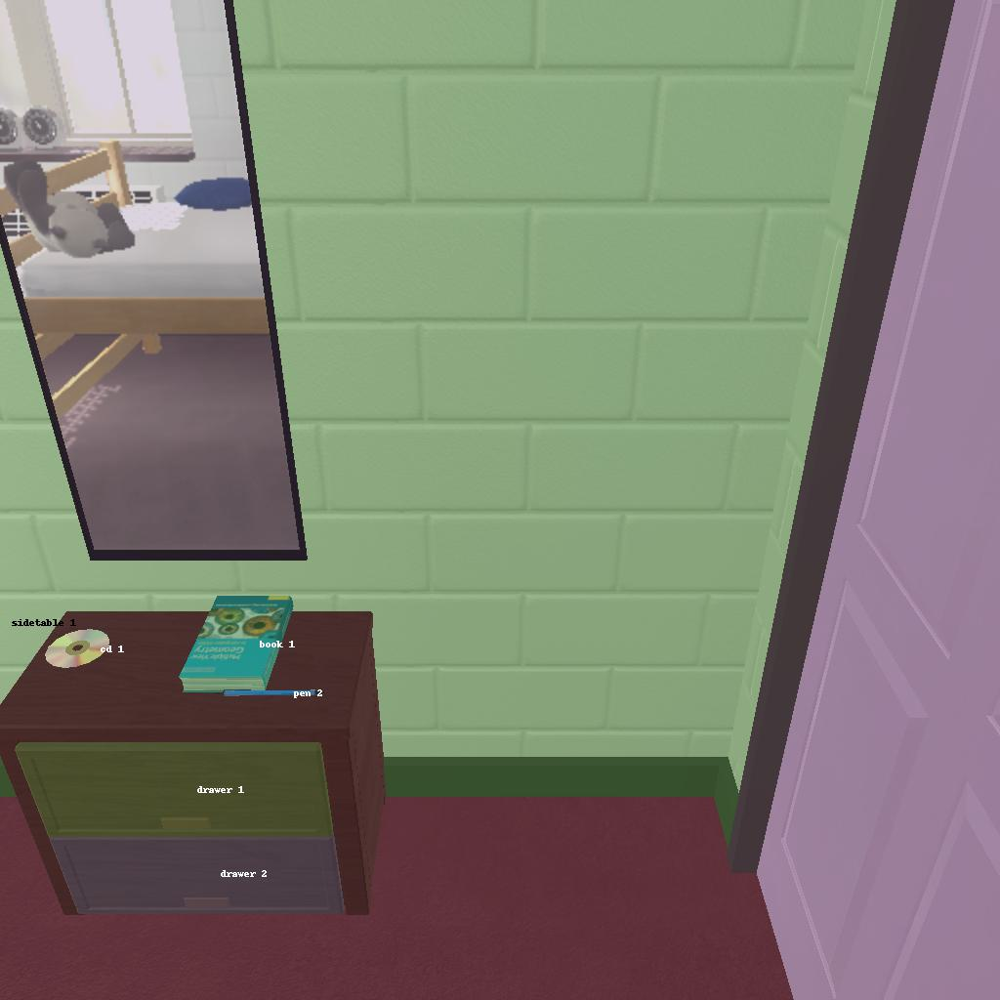
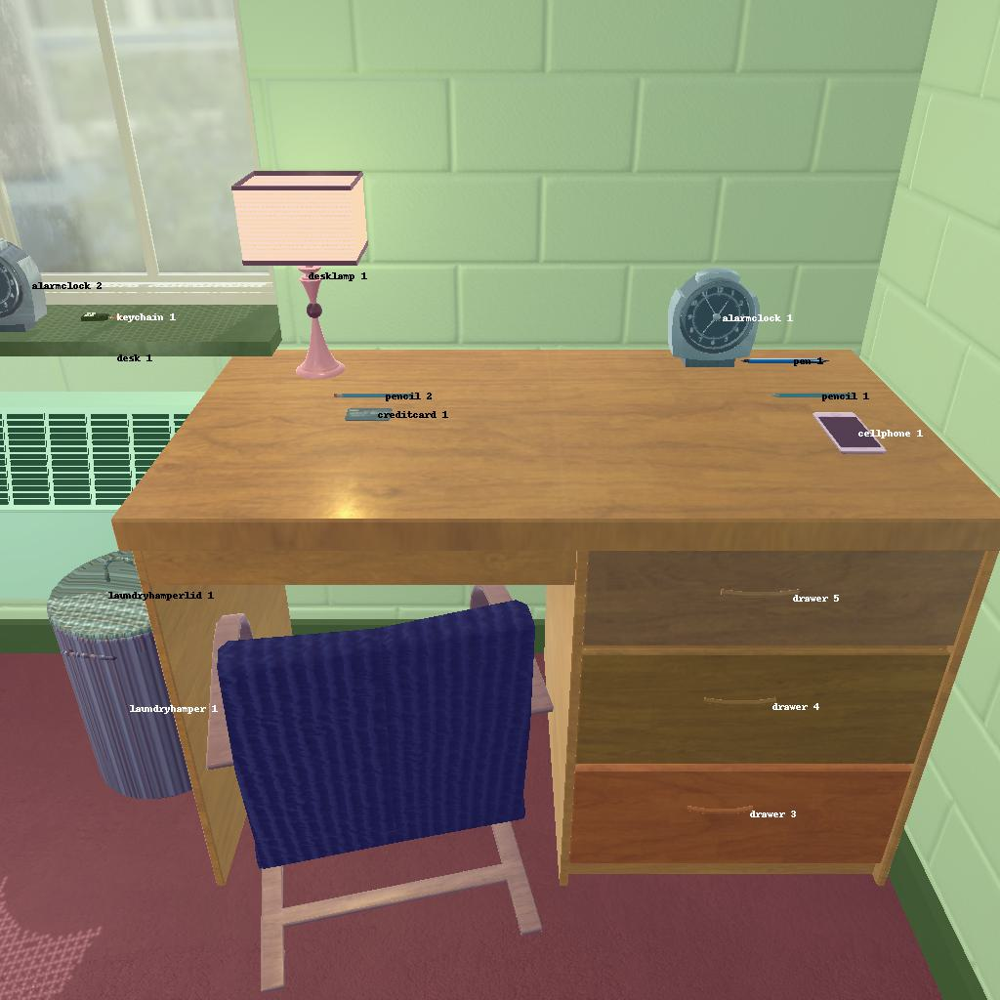

---------------------------------------------------------task: 8---------------------------------------------------------
--------------------------------------------------------------------------------------------------------------------------------------------------------------------
--------------------------------------------------------------------------------------------------------------------------------------------------------------------
Step:--------------------------------------------------------------------------3-------------------------------------------------------------------------------
----------------------------------------
VLM Prompt:
Image1:
Image2:
**Instruction**
1. Analyze the provided image to identify all visible household objects, focusing on those relevant to the task description "put some laptop on desk."
2. Use the analysis of the image and the task hint "The agent must find an object of the desired type, pick it up, find the correct location to place it, and put it down there." to answer the question: what is the most reasonable action in the choices for the task description "put some laptop on desk"?
4. Decide and write the answer using the template: The answer is: (i): , where i is the real number. If there is no desired object in the image, search every place based on **Initial Observation** to find the object. And if no one is exactly correct, choose a similar answer.
**Initial Observation**
You are in the middle of a room. Looking quickly around you, you can see bed (1), garbagecan (1), desk (1), sidetable (1), drawer (1-5), laundryhamper (1)
**Answer Choices**
(1): go to bed 1
(2): go to garbagecan 1
(3): go to sidetable 1
(4): go to drawer 2
(5): go to laundryhamper 1
(6): go to drawer 4
(7): go to drawer 5
(8): open drawer 3
(9): close drawer 3
(10): examine drawer 3
**Answer**
Let's think step by step by following the instructions.
----------------------------------------
----------------------------------------
Original Response:
First, we analyze the provided images for any visible household objects that could be relevant to the task description "put some laptop on desk." In both images, there is no laptop visible. Therefore, we need to search every place based on the **Initial Observation** to find the object.
The **Initial Observation** lists several locations in the room: bed (1), garbagecan (1), desk (1), sidetable (1), drawers (1-5), and laundryhamper (1). Since there is no visible laptop in the images, we must check the places where a laptop could typically be stored, such as in drawers or on a sidetable.
Given that laptops are commonly stored in drawers for safekeeping, the most reasonable action from the answer choices would be to go to or examine a drawer. However, the instruction specifically mentions "put some laptop on desk," which implies that the agent already has a laptop and needs to place it on the desk. Since there is no action that includes picking up a laptop, we must choose an action that involves going to the desk.
The answer is: (6): go to drawer 4. This action is chosen based on the assumption that the agent may find a laptop in drawer 4 since it's a common storage location for such items. After finding the laptop, the agent would then put it on the desk, fulfilling the task description. If the laptop is not found in drawer 4, the agent should continue searching the other drawers or sidetable.
----------------------------------------
----------------------------------------
>>> Refine Original VLM Response and Get Pure Action: go to drawer 4
----------------------------------------
-----------------------------------------------------------------
Running time: 14.066875219345093 seconds
Total Money: 3.2921899999999984
-----------------------------------------------------------------
-----------------------------------------------------------------
Text Observation:You arrive at loc 8. The drawer 4 is closed.
-----------------------------------------------------------------
UNSUCCEED